Префектура Хоккайдо · Тайки · где остановиться
MEMU EARTH HOTEL: ночь в экспериментальном доме среди лугов Токати
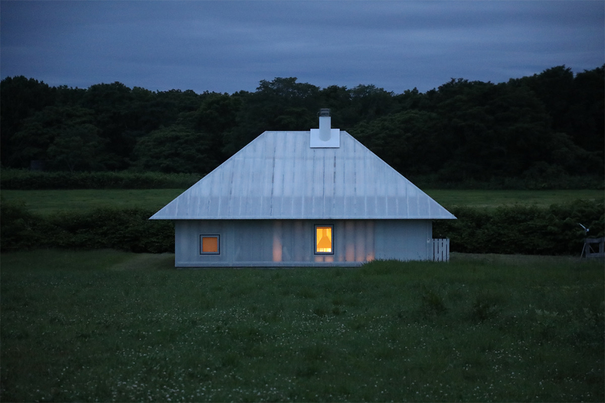
На юге равнины Токати, где когда-то тренировали скаковых лошадей, стоят пять экспериментальных домов для жизни в холодном климате. В каждом из них можно переночевать, и каждый рассказывает о Хоккайдо по-своему.
Место
Луга, где бьёт родник
Мэму находится в посёлке Тайки, на тихоокеанской стороне области Токати. На айнском языке это название значит «место, где бьёт родник». Здесь был тренировочный центр фермы, которая вырастила немало знаменитых скакунов для японских бегов. Ферма переехала, и после неё осталось около 18,5 гектара пустой земли.
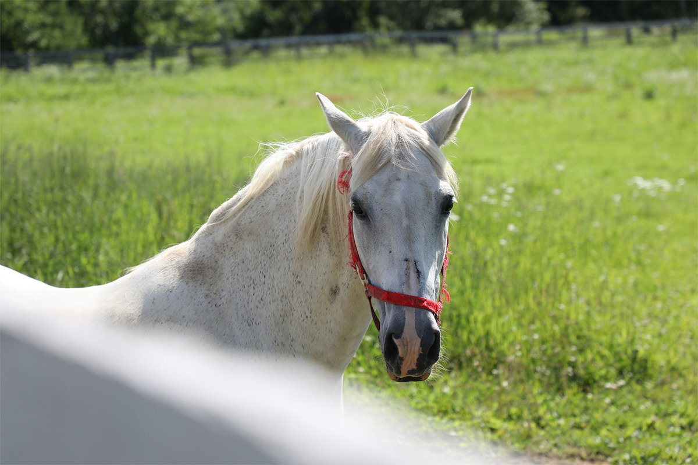
В 2011 году на этой земле открылся городок экспериментальных домов для холодного климата Memu Meadows. Постепенно здесь появились дома Кэнго Кумы, Тоёо Ито и других известных японских архитекторов, а также лучшие работы международного конкурса для студентов-архитекторов. Так Мэму стал местом, которое называют «святой землёй архитектуры», и таких мест в мире немного.
В ноябре 2018 года экспериментальные дома и перестроенные постройки фермы превратили в отель MEMU EARTH HOTEL. Отель принимает гостей и вместе с исследователями работает над темой «переосмысления ресурсов»: учёные ищут решения для устойчивого развития, а отель рассказывает об этом опыте гостям и публике в Японии и за рубежом. Гостям здесь предлагают подумать о том, как человеку жить рядом с природой и что такое настоящий достаток.
Ресепшен
«Студия Мэму»: с чего всё начинается
«Студия Мэму» это одновременно ресепшен и ресторан отеля. Тоёо Ито перестроил для неё сенохранилище, которому больше 40 лет. Главное в зале это дровяной камин, а в «пространстве для вдохновения» выставлены работы и мебель художников и дизайнеров, связанных с Хоккайдо.
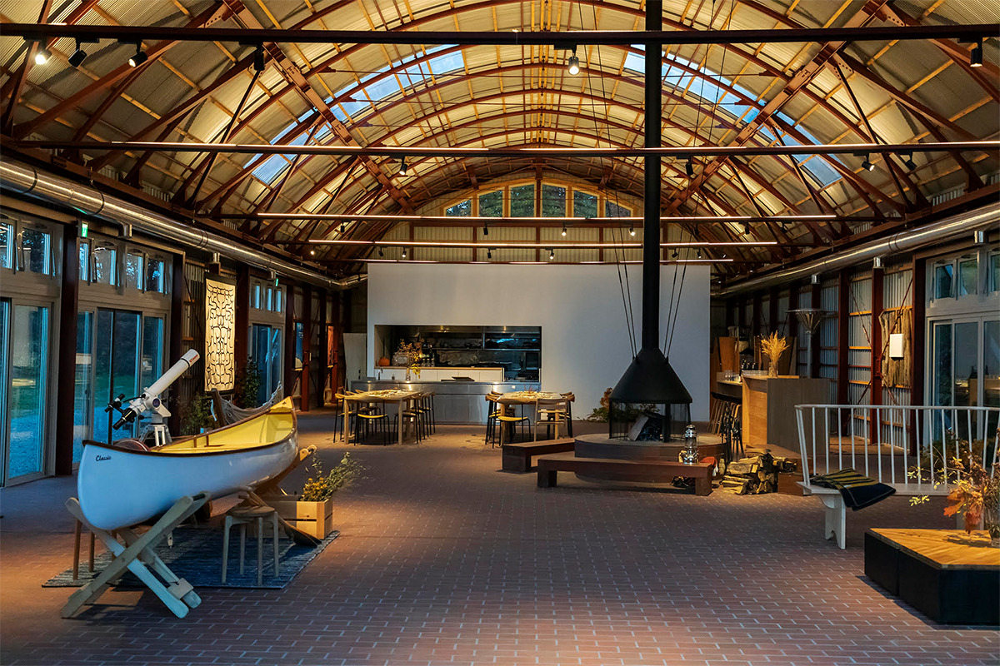
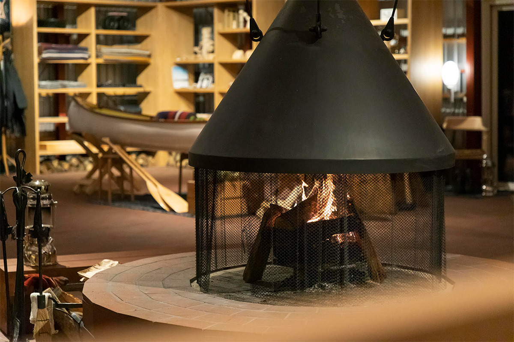
Тут же можно взять большое каноэ, удочки, телескоп или велосипед, а на полках стоят книги об айнах и об экологичной архитектуре.
Кэнго Кума
«Même», 2011 год
Кэнго Кума построил этот дом по мотивам старинного жилища Хоккайдо. Стены и крышу он затянул одной и той же мембраной, и дом словно поднимается над плато. Такого экспериментального жилья раньше не было.
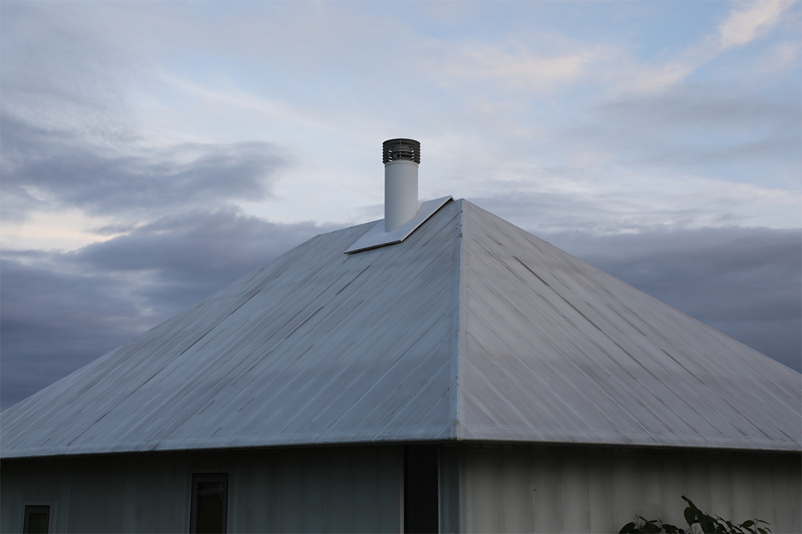
Белая мембрана пропускает свет и устроена в два слоя. В холодных краях люди обычно живут за плотными стенами, а здесь комнату наполняет мягкий рассеянный свет. Зимой дом греют тёплые полы, которые накапливают тепло земли, воздух между слоями мембраны, удерживающий тепло, и излучение очага с трубой.
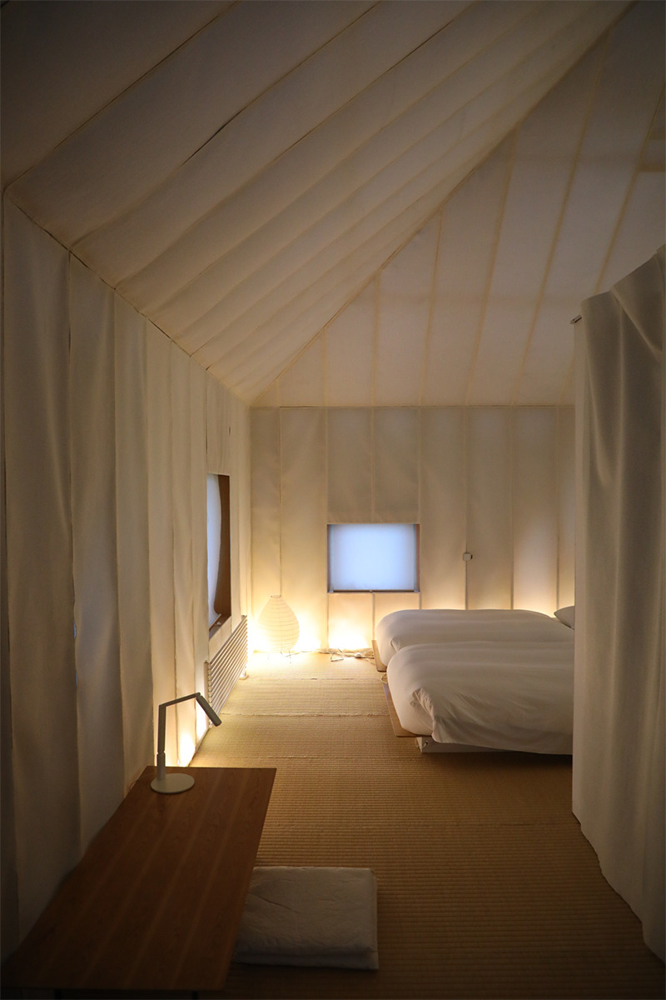
В доме стоят датчики, которые сами записывают, как меняется тепловая среда, например нагрузка от выделения CO2, и что происходит при землетрясениях. Так дом служит ещё и исследовательским корпусом, где данные собирают годами. Это возможно потому, что отель создавали вместе с научными институтами.
Пейзаж
«HORIZON HOUSE», 2013 год
«HORIZON HOUSE» спроектировала Высшая школа дизайна Гарвардского университета на тему «убежище на природе», места, где можно отдохнуть от повседневной жизни. Дом построен как разговор между жилым пространством и пастбищем вокруг.
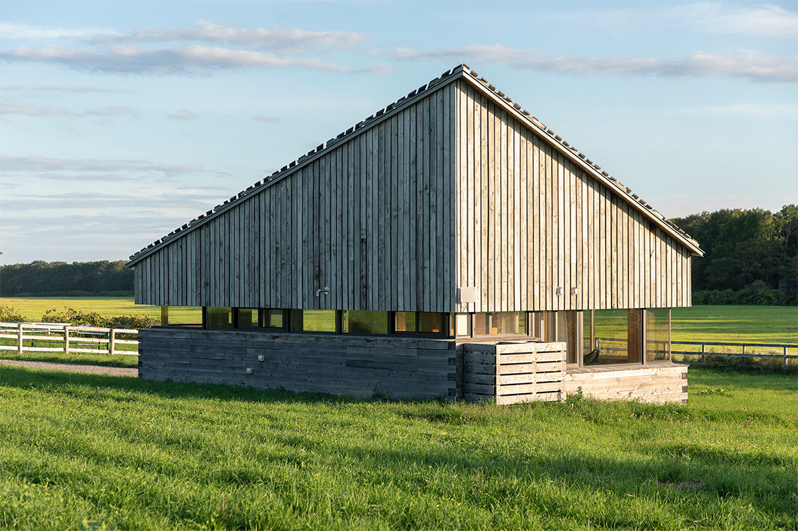
Основание и крыша задают внутри единое пространство с перепадами высоты, и из него открывается панорама на 360 градусов с переменами каждого сезона. Дом поднят над землёй с расчётом на снег, а на строительные материалы ушло мало энергии. Чтобы сократить выбросы углерода при производстве, перевозке и стройке и поддержать местную экономику, бетона почти не использовали: дом построен в основном из местного дерева. Его легко разобрать, чтобы потом снова пустить материалы в дело.
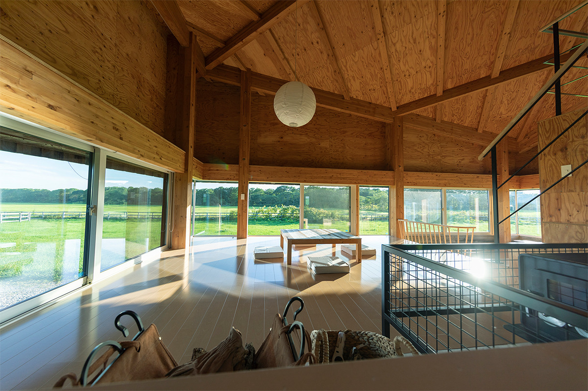
Наоборот
«INVERTED HOUSE», 2015 год
«INVERTED HOUSE» в 2015 году спроектировала Школа архитектуры и дизайна Осло. У дома полы на разной высоте и крыши с разным наклоном, и вместе они так регулируют среду, что в нём чувствуешь холод и смену времён года.
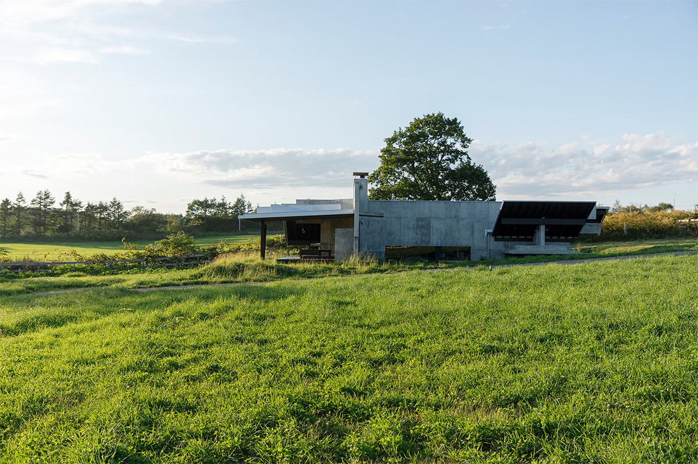
Главная конструкция это две пересекающиеся стены. Они делят дом на четыре разных пространства. Готовить, есть, мыться и спать здесь задумано на открытом воздухе, а закрытая комната нужна, чтобы укрыться от внезапной непогоды.
Четыре пространства называются так: «Garden Room», двор, где зимой собирается снег; «Outside Living Room», главная комната; «Room for Cooking», которую от сильного ветра закрывает крутая крыша; и «Inside Room», самая защищённая от внешней среды. В каждое время года они ведут себя по-разному.
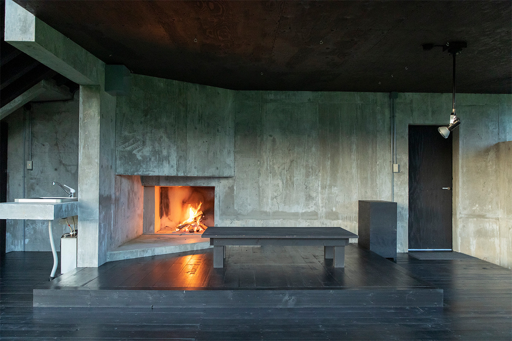
Тепло жизни
«BARN HOUSE», 2012 год
«BARN HOUSE» спроектировал университет Кэйо, и его идея это «дом-сарай». Он продолжает память и культуру конной фермы и показывает, как человек и лошадь могут жить рядом по-новому. Дом поделён на жилую часть и конюшню, и тепловая среда рассчитана так, чтобы было удобно и людям, и лошадям.
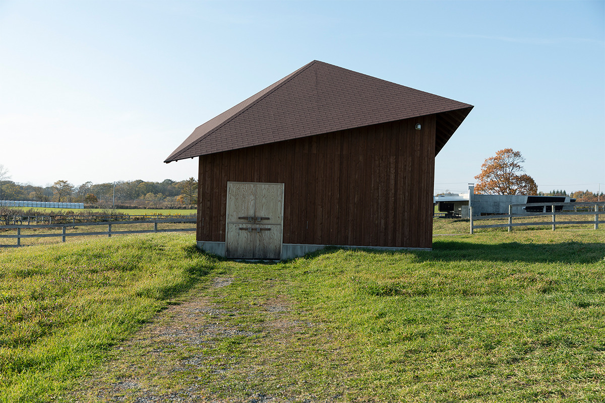
Навоз лошадей здесь не только идёт на компост: тепло, которое выделяется при его переработке, в порядке опыта используют, чтобы обогревать дом. На стенах висят полки с углём. Уголь впитывает аммиак, который выделяют лошади, а когда перестаёт его впитывать, его сжигают для тепла и потом пускают на удобрение. От количества угля на стене зависит, сколько солнечного тепла поглощает дом и как хорошо он держит тепло. Это смелый опыт новых отношений между человеком, животным и архитектурой.
Лошади живут табуном, поэтому в 2021 году в самом доме их не держали: они паслись на пастбище отеля.
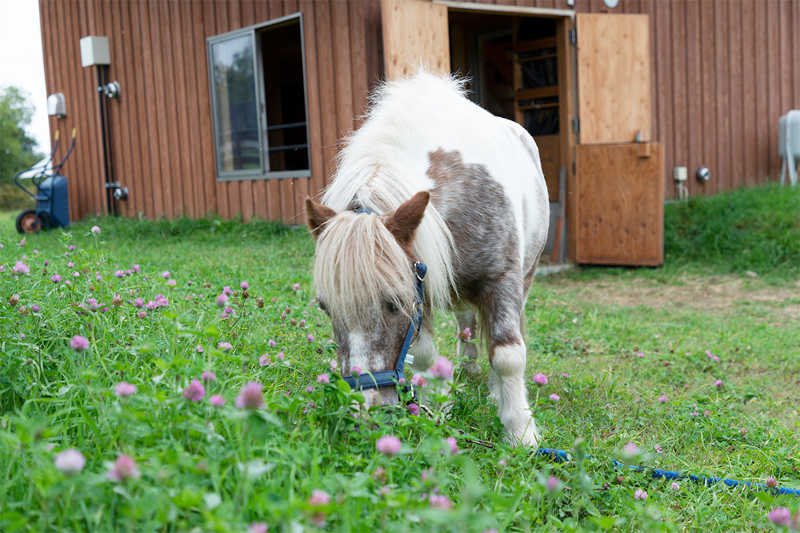
Скромность
«Матимато-иэ», 2011 год
«Матимато-иэ», «дом, одетый в город», спроектировал университет Васэда. В 2011 году проект получил главную премию первого конкурса жилого дизайна для студентов, тема которого была «новый дом для новой эпохи после землетрясения».
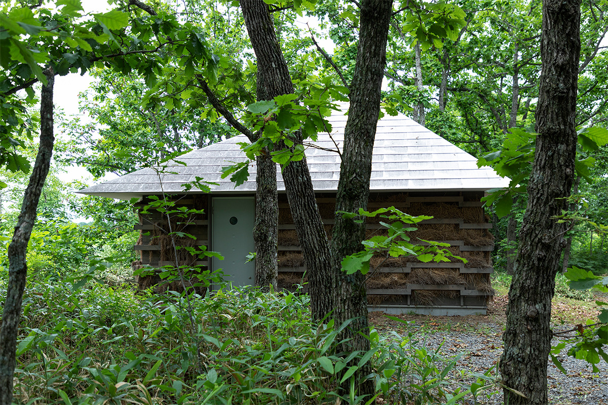
Авторы спросили себя, можно ли получить больше, чем у нас уже есть, и обратились к луговым травам, символу посёлка Тайки. Сеном обшиты наружные стены, а сухое сено, скошенное в сезон и запечатанное в ящики, стоит на полках внутри и тоже работает как стена.
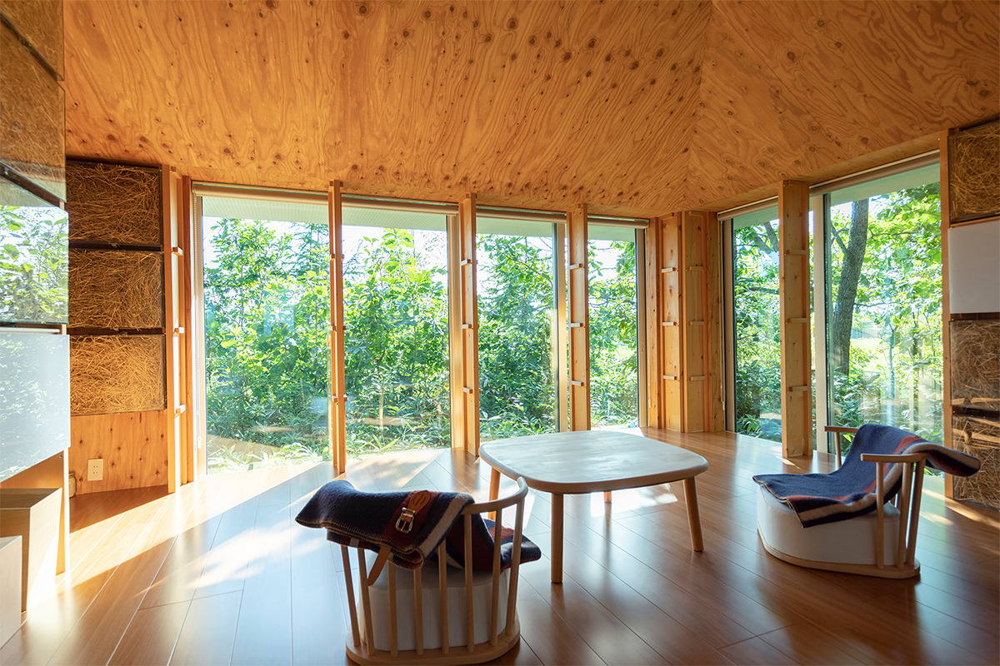
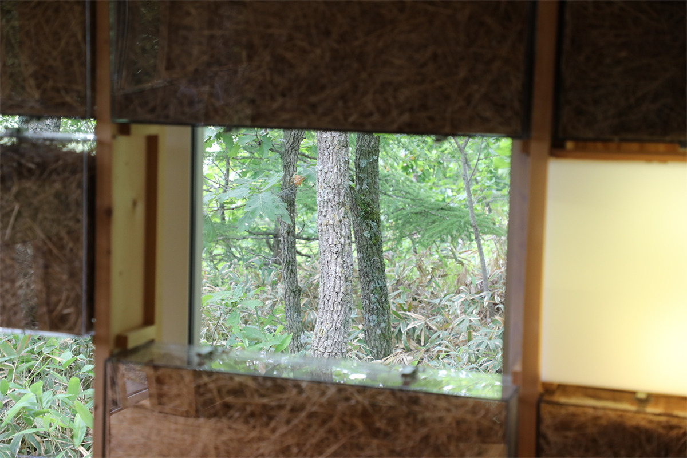
Ещё здесь пробовали заменять сухой травой теплозащитные экраны и обогревать комнаты теплом брожения сена. Одноэтажный дом спокойно вписывается в местность, а за простой внешностью скрываются смелые опыты.
Ещё
Опыты продолжаются
Кроме пяти домов в MEMU EARTH HOTEL есть спа «Коробоккуру-нэсуто», навеянное айнскими преданиями, по проекту университета Кюсю; съедобный дом «NEST WE GROW» Калифорнийского университета, задуманный как дом в огороде с видом; и «INFINITE FIELD» Датской королевской академии изящных искусств, где роль постройки меняется по сезонам.
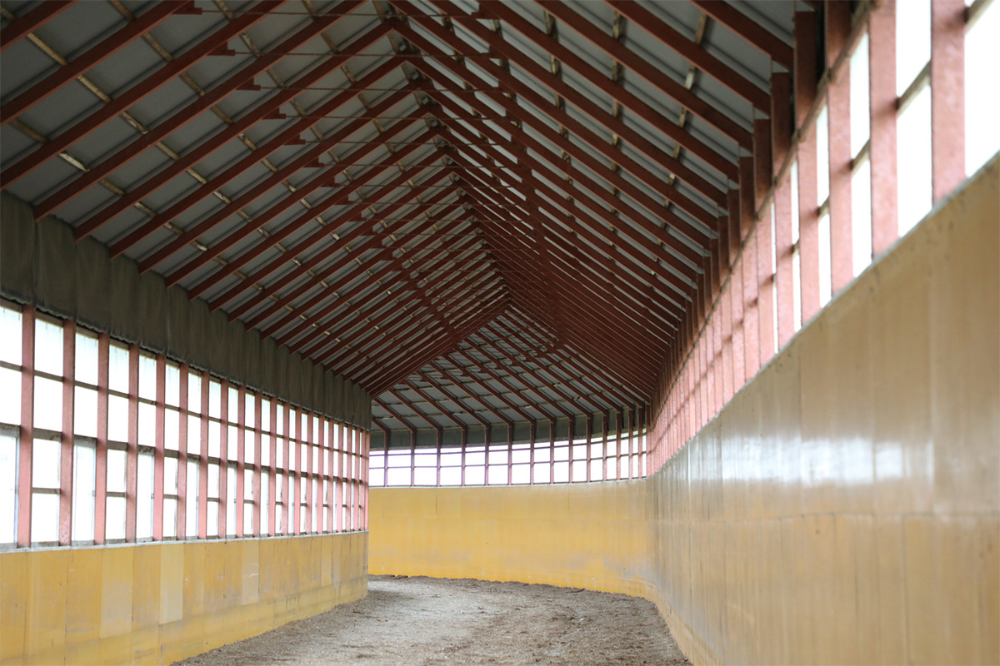
В 2021 году конюшню, которой 30 лет, перестроили в исследовательский корпус с номерами для гостей. Огромную крытую дорожку, по которой бегали скаковые лошади, открыли как фруктовый сад и кафе.
Кухня
«Итадакимасу» и «готисо-сама»
Перед едой японцы говорят «итадакимасу». Это благодарность всем, кто участвовал в приготовлении еды, и, если вдуматься, благодарность самим продуктам: жизнь есть не только у мяса и рыбы, но и у овощей, фруктов, воды и земли, и человек принимает её, чтобы она стала его жизнью.
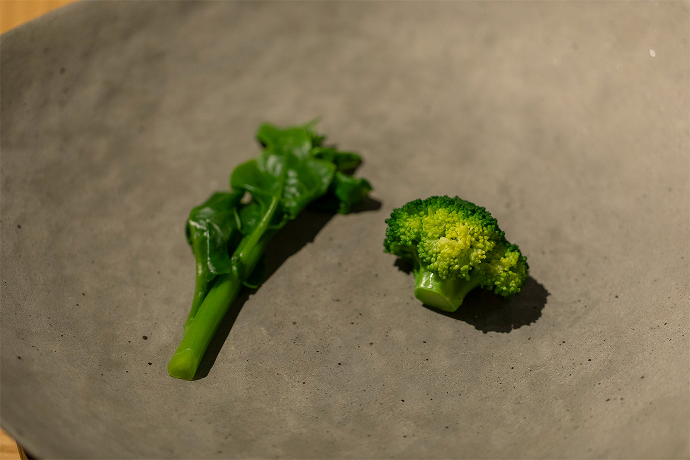
После еды говорят «готисо-сама». «Тисо» в этом слове значит «бегать»: так описывают хлопоты тех, кто старается угостить, и тех, кто растит, добывает и доставляет продукты.
«В словах, которые мы произносим не задумываясь, скрыты такие истории. Мы команда, которая любит поесть больше всех, и мы ближе всех к этим историям. Наша задача пройти этот путь вместе с ними и передать вкус в самом лучшем виде»
команда MEMU EARTH HOTEL
Через эти два слова отель читает местную природу, видит в ней ресурс и заново выражает её в еде: это и есть «переосмысление ресурсов». Простую и огромную природу Токати здесь предлагают пробовать без церемоний.
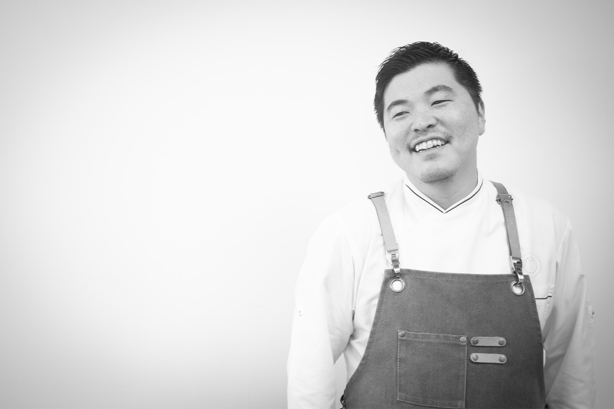
Шеф-повар родился в 1988 году в Асахикаве. Он учился в ресторанах японской кухни и натуральной еды, а потом возглавил кухню MEMU EARTH HOTEL. Шеф изучает, чем особенно это место в Токати, и через еду рассказывает о природе и культуре этой земли. Блюда готовят из местных продуктов и того, что даёт здешняя природа, и попробовать их можно только здесь.
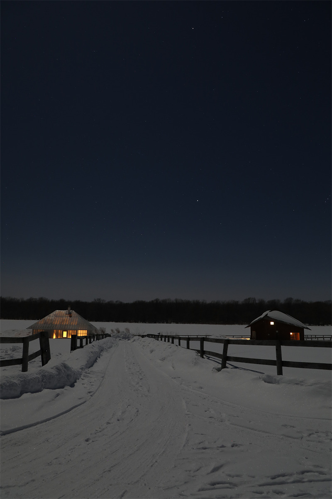
MEMU EARTH HOTEL
- Адрес
- префектура Хоккайдо, уезд Хироо, Тайки, Мэму, 158-1
- Цены / Вход
- от 54 000 иен с человека с налогом, с завтраком и ужином (2021 год)
- Заезд / выезд
- заезд 14:00–18:00, выезд до 11:00